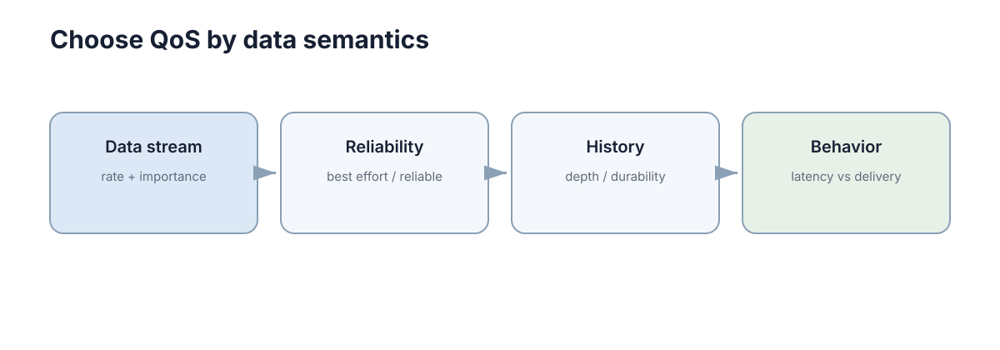

DDS & ROS2
先澄清最容易误解的一点：ROS 的全名是 Robot Operating System，但它并不是 Ubuntu、Windows 那种负责进程调度、内存管理和硬件驱动的内核级操作系统。
更准确地说，ROS 是一套运行在 Linux 等操作系统之上的机器人软件框架：它规定模块怎样拆成节点、节点怎样交换消息、坐标系怎样管理、程序怎样启动、数据怎样记录，并提供大量现成工具和机器人软件包。ROS2 又把这些能力建立在 DDS 等通信中间件之上。
所以理解 ROS，不应该从背
ros2 topic list开始，而应该先问：一台机器人为什么需要这么一层软件基础设施？

一、先从一台不用 ROS 的机器人开始
假设要做一辆最简单的移动机器人，只完成四件事：
- 激光雷达不断产生距离数据；
- 定位程序根据雷达和里程计估计机器人位置；
- 规划程序根据当前位置与目标点生成路径；
- 控制程序把路径变成左右轮速度。 如果所有代码都写在一个 Python/C++
程序里，最开始确实很方便：
读取雷达 → 算位置 → 规划 → 算速度 → 写串口但很快会遇到第一个问题：四个模块的运行频率根本不同。 假设雷达 10 Hz，定位 50 Hz，规划 2 Hz，底盘控制 100 Hz。若把它们塞进一个顺序循环，规划一次耗时 200 ms，就会让本来应该每 10 ms 更新一次的控制器一起停 200 ms。 这不是“代码写得慢”，而是不同任务不应该被绑在同一个执行节奏里。 于是自然会把它们拆成多个进程：
雷达驱动进程；
定位进程；
规划进程；
控制进程。 拆开以后，第二个问题立刻出现：这些进程怎么交换数据？ 最直接的办法是自己写 TCP/UDP。可是这又会带来一串额外工作：
谁负责分配 IP 和端口？
一个雷达数据同时给定位和避障两个程序时，是开两个连接还是转发？
新启动的节点怎样找到发布者？
数据结构升级后怎么保证两边类型一致？
多台机器之间怎么通信？
某个模块重启后，其它模块是否必须重启？
如何查看现在系统里到底有哪些通信连接？ 这些问题与“机器人算法”本身无关，却会占掉大量开发时间。 ROS 就是在这里被需要的：它把机器人程序之间反复出现的通信、发现、类型、坐标系、启动、记录和调试问题抽成统一基础设施。 可以先记住一句最重要的话：
ROS 的核心价值不是“提供某个算法”，而是让很多独立机器人模块能够按照统一接口组成一个系统。
二、ROS 与真正操作系统是什么关系
一台运行 ROS2 的机器人通常至少有四层。
| 层 | 典型内容 | 负责什么 |
|---|---|---|
| 硬件 | CPU、网卡、串口、雷达、电机 | 真实计算和物理执行 |
| 操作系统 | Linux 内核、Ubuntu、设备驱动、进程调度 | 管理硬件、内存、线程和文件 |
| ROS2 基础设施 | rcl、rclcpp/rclpy、RMW、DDS、TF2、Launch | 模块通信、发现、坐标、启动、工具 |
| 机器人应用 | SLAM、Nav2、感知、规划、控制 | 完成具体机器人功能 |
因此，当一个 ROS 节点“卡住”时，原因可能来自完全不同的层：
- USB 雷达掉线：硬件/驱动层；
- 进程 CPU 占满：操作系统调度层；
- 话题 QoS 不兼容：ROS/DDS 层；
- A* 找不到路径：应用算法层。 如果把 ROS
当成一个黑盒“操作系统”，排错时很容易跨层乱改。 例如
/scan没数据时直接去改 SLAM 参数，就是典型的层级错误。正确顺序应该先确认设备存在，再确认驱动节点存在，再确认/scan是否发布，最后才看 SLAM 是否订阅成功。
ROS2 内部也不是一层
从上往下可以继续拆成：
| 层 | 常见名字 | 作用 |
|---|---|---|
| 应用 API | rclcpp、rclpy |
C++ / Python 写节点时直接使用 |
| ROS Client Library 公共层 | rcl |
把不同语言的公共行为统一 |
| RMW | ROS Middleware interface | 把 ROS API 与具体中间件隔离 |
| DDS/RTPS | Fast DDS、Cyclone DDS 等 | 发现、序列化、网络传输、QoS |
| OS / Network | UDP、共享内存、网卡 | 最终执行数据传输 |
这里的关键不是记名字，而是理解“可替换边界”。 应用程序通常只写
rclcpp 或 rclpy；它不应该直接依赖某一家 DDS
的私有 API。这样底层 DDS 实现可以更换，而上层节点逻辑尽量不变。 这也是
RMW（ROS Middleware）存在的原因：它是一层适配接口，把 ROS 与具体
DDS 实现解耦。
三、Node：为什么 ROS 要把功能拆成节点
ROS 中最基本的运行单元叫 Node，中文通常称“节点”。 节点不是一台机器，也不是一个线程，更不是一个 Topic。 它更像是“一个有名字、能够参与 ROS 通信的功能模块”。 例如一辆车可以有：
| 节点 | 主要职责 | 典型输入 | 典型输出 |
|---|---|---|---|
lidar_driver |
读取雷达 | USB/串口 | /scan |
wheel_odom |
计算轮式里程计 | 编码器 | /odom |
localization |
估计位姿 | /scan、/odom |
/pose |
planner_server |
规划路径 | 地图、目标、位姿 | Path |
controller_server |
跟踪路径 | Path、位姿 | /cmd_vel |
base_driver |
驱动底盘 | /cmd_vel |
电机串口指令 |
为什么不直接把这些功能写成库函数？ 因为机器人系统里最重要的不是“函数能被调用”，而是各模块可以独立运行、独立重启、独立部署、独立观测。 如果雷达节点崩溃，理想情况是只重启雷达驱动，而不是整个导航系统一起退出。
节点与进程不是一一对应
零基础最容易形成的错误印象是：
一个 Node = 一个 Linux 进程。
ROS2 并不要求这样。 常见情况有两种：
一个进程只运行一个节点，边界清晰，容易隔离故障；
一个进程装入多个组件节点，减少进程间通信和复制开销。 后者称为 component composition（组件组合）。 所以应该区分三个概念：
Node：ROS 逻辑模块；
Process：操作系统进程；
Thread：进程中的执行线程。 它们属于不同层级。
四、ROS Graph：节点为什么能“自动找到”彼此
当多个节点开始运行后，会形成 ROS Graph，也就是“ROS 计算图”。
图中的节点不是靠你手工写死 192.168.1.10:5000
才连接，而是通过底层发现机制交换信息。 图中至少包含：
- 哪些节点存在；
- 哪些节点发布哪些 Topic；
- 哪些节点订阅哪些 Topic；
- 有哪些 Service；
- 有哪些 Action；
- 各接口使用什么消息类型；
- 通信端点的 QoS 是否兼容。 例如控制器订阅
/odom时，它表达的是：
“我要接收名字为
/odom、类型匹配且 QoS 兼容的数据。”
它不需要知道里程计发布者在哪个进程、哪台电脑上。 这就是 ROS 的位置解耦。
名字相同不等于一定通信
两端能够真正连起来，至少要满足：
- 名称匹配；
- 消息类型匹配；
- DDS discovery 能互相发现；
- QoS 兼容；
- 网络链路可达。 所以
ros2 topic list看到了/scan，并不能证明你的订阅回调一定能收到扫描数据。 这也是 ROS 调试中非常重要的思维：“能发现接口”和“数据真正能够流动”是两件事。
五、Topic、Service、Action 与 Parameter 为什么要分开
假设机器人系统里有四种需求：
- 雷达每 100 ms 发一帧数据；
- 用户偶尔请求“清空地图”；
- 用户发送“导航到 A 点”，任务可能持续 30 秒；
- 控制器的最大速度设为 0.6 m/s。 如果只提供一种“消息”机制，也能勉强实现，但每个需求的交互语义完全不同。 ROS 因此提供四类常用接口。
| 原语 | 交互形式 | 什么时候结束 | 能否持续反馈 | 能否取消 | 典型用途 |
|---|---|---|---|---|---|
| Topic | 发布/订阅 | 不结束，持续流动 | 本身就是持续数据 | 不适用 | /scan、/odom、/cmd_vel |
| Service | 请求/响应 | 返回一次响应后结束 | 否 | 通常不作为长任务取消机制 | 清零、查询、触发 |
| Action | goal/feedback/result | 任务完成后结束 | 是 | 是 | 导航、机械臂抓取 |
| Parameter | 节点配置 | 配置被读写 | 可监听变化 | 不适用 | 增益、阈值、最大速度 |
Topic：没有“谁调用谁”的持续数据流
Topic 最适合持续产生的数据。 雷达驱动只负责不断发布
/scan，并不需要知道谁在使用它。 今天可以只有 SLAM
订阅，明天再启动一个避障节点，两者都能同时得到数据，雷达驱动无需修改。
这就是发布/订阅（publish/subscribe）的扇出能力。
Service：一次问题，一次答案
Service 适合边界明确、耗时较短的操作。 例如“保存地图是否成功？”天然对应一个请求和一个结果。 如果一个操作需要几十秒，用 Service 就会遇到问题：调用者在等待期间不知道进度，也很难优雅取消。
Action：为什么导航不能只用 Service
“导航到目标点”至少有三个阶段：
- 发送目标；
- 运行期间不断得到进度；
- 最终成功、失败或取消。 Action 就是为这种长任务设计的。
可以把它记成：
Goal → Feedback → Result并且 Goal 还能被取消或抢占。
Parameter：配置不应该偷偷写死在代码里
假设最大速度从 0.4 m/s 改成 0.6 m/s。 如果这个数字散落在 C++ 源码里，每次修改都要重新编译；如果它是参数，就可以由 YAML 或启动文件注入。 参数的核心作用不是“方便调参”，而是把程序逻辑与运行配置分离。
六、Message / Service / Action 类型就是模块之间的合同
ROS 不只要求 Topic 名称相同，还要求消息类型相同。 例如
/cmd_vel 常使用 geometry_msgs/msg/Twist。 一个
Twist 中包含线速度和角速度。对移动底盘，常见约定是：
linear.x：前进速度，单位 m/s；angular.z：绕竖直轴旋转的角速度，单位 rad/s。 看起来只是两个数字，但真正的接口合同还包含：单位是什么；
坐标轴方向是什么；
时间戳表示采样时刻还是发送时刻；
数据多久更新一次；
缺失一帧时接收端怎么办；
哪些值属于非法值。 因此消息结构只是“语法”，字段语义才是“合同”。
# Topic：持续发布带明确单位的速度命令
cmd = Twist()
cmd.linear.x = 0.4 # m/s
cmd.angular.z = -0.2 # rad/s
velocity_publisher.publish(cmd)
# Service：一次请求、一次响应
future = reset_client.call_async(Trigger.Request())
future.add_done_callback(handle_reset_result)上面的代码体现了两种不同关系：速度命令是持续数据流，重置操作有明确请求和结果。
为什么自定义消息不能随便改
假设一个消息原来有字段
distance_m，后来开发者为了“方便”让它改成毫米，但字段名不变。
编译可能完全通过，所有节点也仍然能通信，但数值会放大 1000 倍。
这类错误比类型不匹配更危险，因为系统会稳定地做错事。
所以接口变更时至少遵守两条：
- 改单位或改语义，要视为破坏性变更；
- 新增字段应尽量提供明确默认行为，让旧消费者仍能工作。
七、TF2：为什么机器人必须有统一坐标系
ROS 系统里另一个几乎无处不在的基础设施是 TF2。
想象雷达检测到一个障碍物在它前方 2 m。 这个“前方 2
m”是相对于雷达坐标系说的，不是相对于地图。 如果雷达安装在机器人前方 0.25
m，而机器人本体又位于地图坐标
(3.0, 1.0)，规划器必须把这些坐标关系串起来，才能知道障碍物在地图中的位置。
移动机器人中常见一条链： map → odom → base_link → laser
每一条箭头都表示一个坐标变换。 可以把它理解成：
map：长期全局参考；odom：短时间连续但会漂移的里程计参考；base_link：机器人本体；laser：雷达安装位置。
为什么同时要 map 和 odom
只用一个全局坐标系看起来更简单，但
SLAM/定位算法可能突然修正累计漂移。 例如机器人根据轮速认为自己在
x=10.4 m，回环后发现实际上应是 x=9.8 m。
若直接让控制器看到 0.6 m 的瞬间跳变，它可能产生剧烈控制动作。 ROS
导航栈常通过 map → odom 吸收全局校正，而
odom → base_link 保持短期连续。
这实际上是在同时满足两个需求：
- 全局位置长期不能无限漂移；
- 控制所用局部位姿短时间不能突然跳。
TF 不只关心空间，还关心时间
如果图像是 10:00:00.100 采到的，却拿 10:00:00.300 的机器人位姿去变换，机器人高速运动时会出现明显空间误差。 假设机器人速度为 1 m/s，时间错位 200 ms，则仅平移误差就可能达到
\[ 1\times0.2=0.2\ \text{m}. \]
所以 TF 查询本质上是：
“在某个时间点，frame A 到 frame B 的变换是多少？”
这也是为什么时间戳错误经常表现成“坐标系问题”。
八、Package、Workspace、colcon 与 overlay 到底是什么
很多初学者第一次接触 ROS2 时，最困惑的不是算法，而是目录结构。 先从最小单位开始。
Package：可编译、可安装、可复用的软件单元
一个 ROS package 通常包含：
- 节点源码；
package.xml：包的名字、版本、依赖等元数据；- C++ 包常有
CMakeLists.txt； - Python 包常有
setup.py/setup.cfg； - 可选的 launch、config、URDF、msg 等资源。 Package 更像“一个可独立构建和安装的模块”，而不是一个任意文件夹。
Workspace：一组一起开发的 Package
典型 ROS2 workspace 会出现四个关键目录：
| 目录 | 作用 | 是否手工写代码 |
|---|---|---|
src/ |
源码包 | 是 |
build/ |
构建中间文件 | 否 |
install/ |
安装后的可执行文件与环境脚本 | 否 |
log/ |
colcon 构建日志 | 否 |
真正应该版本管理的主要是 src/ 和必要配置，而不是
build/、install/、log/。
colcon 做了什么
colcon build 不等于“编译一个 cpp 文件”。 它会读取
workspace 中各 package 的依赖关系，然后按依赖顺序构建，并把结果安装到
install/。 例如：
msgs_pkg → localization_pkg → navigation_pkg
若后两个包依赖第一个自定义消息包，colcon 会先处理消息包。
source 为什么必不可少
构建结束后，当前 shell 并不会自动知道新包安装在哪里。 执行
source install/setup.bash 的本质，是把这个 workspace
的包路径、库路径和环境信息加入当前 shell。 所以一个常见错误是：
明明刚刚 build 成功，
ros2 run却说找不到包。
第一件事不是重新编译，而是检查当前终端有没有 source 对应环境。
underlay 与 overlay
假设先加载系统 ROS2 Humble： /opt/ros/humble
再加载自己的 workspace： ~/robot_ws/install 系统 ROS 是
underlay，自己的 workspace 是 overlay。 overlay 中同名资源可以覆盖
underlay。 这很强大，也很危险：如果连续 source
多个互相依赖、甚至互相引用的 workspace，最终环境变量会非常难推理。
因此应把“当前 shell 到底 source 了什么”当成 ROS
环境的一部分，而不是无关细节。
九、Launch、Lifecycle 与 Composition 解决的是系统启动问题
节点多到十几个以后，一个个打开终端执行命令就不可维护了。 Launch 文件解决的是：
- 一次启动多个节点；
- 给节点传参数；
- remap 名称；
- 按条件启动；
- 组织 namespace；
- 组合多个 launch 文件。 所以 Launch 不是单纯的“快捷启动脚本”，它描述的是一份系统运行拓扑。
Remap 为什么重要
假设一个通用避障节点订阅 /scan，但某台车的雷达发布
/lidar_scan。 可以选择改源码，也可以启动时把接口 remap：
/scan ← /lidar_scan 后者保持了节点本身的通用性。
Namespace 解决多机器人重名
如果三辆车都发布 /odom，直接放进同一个 ROS
图会产生名字冲突和语义混乱。 可以使用 namespace：
/rover1/odom；/rover2/odom；/rover3/odom。 这不是简单“加前缀”，而是在同一 ROS 图中建立清晰的命名边界。
Lifecycle：为什么“进程活着”不等于“节点可工作”
一些 ROS2 节点具有 lifecycle（生命周期）状态，例如：
unconfigured → inactive → active → finalized
一个导航节点进程可能已经存在，但还没进入 active
状态，因此不会真正处理业务。
这解决了系统启动顺序问题：先加载配置和资源，确认依赖满足，再统一激活。
否则 20
个节点同时启动时，谁先初始化完成完全由机器负载决定，系统行为就会带有偶然性。
Composition：把多个节点放进同一进程
跨进程通信通常需要序列化、复制和调度。 如果相机 30 Hz、每帧 1920×1080×3 字节，单帧约 6.2 MB，每秒原始数据约
\[ 6.2\times30\approx186\ \text{MB/s}. \]
高带宽链路上，复制本身就可能成为瓶颈。 把紧密耦合的节点组合到同一个进程，并配合进程内通信，可以减少部分复制开销。 代价是故障隔离变差：一个进程崩溃，里面所有组件都一起退出。
十、Executor、Callback 与 spin：节点里的代码究竟什么时候执行
很多人会写 ROS2 回调，却没有真正理解是谁在调用回调。 节点里常见事件包括：
- Topic 收到新消息；
- Timer 到期；
- Service 收到请求；
- Action 状态变化；
- Future 完成。 这些事件不是各自凭空创建线程执行。 ROS2 中
Executor（执行器）负责等待事件，并调度对应 callback（回调函数）。
spin可以粗略理解为：
“让执行器持续等待 ROS 事件，并在事件到来时执行对应回调。”
一个长回调为什么能拖死整个节点
假设单线程执行器里有两个回调：
- 控制定时器：每 10 ms 一次；
- 规划回调：一次计算 80 ms。 如果规划回调开始执行，单线程 Executor
在这 80 ms 内无法同时执行控制回调。 本应 100 Hz 的控制会直接错过约 8
个周期。 所以“Topic 发布频率是 100 Hz”并不代表订阅回调真的以 100 Hz
被执行。 中间还隔着：
消息到达 → 等待队列 → Executor 调度 → Callback 执行
多线程也不是自动变快
MultiThreadedExecutor 允许多个回调并发，但是否真的能并发，还受 callback group、共享资源和锁影响。 如果两个回调都争同一把 mutex，多线程最终仍会串行。 更糟的是，如果缺少正确同步，还会出现数据竞争。 因此执行器设计要回答三个问题：
- 哪些回调必须低延迟？
- 哪些回调可能耗时很长？
- 哪些回调访问同一份状态？ 只有这三个问题清楚以后，单线程、多线程和 callback group 的选择才有依据。
十一、DDS 与 RMW：ROS2 的消息到底怎样跨进程和跨机器
现在再看 DDS，就不会把它误认为 ROS2 的全部。 ROS2 上层负责
Node、Topic、Service、Action 等统一概念；RMW
把这些概念映射到底层中间件；DDS/RTPS 再负责发现、数据分发与 QoS。
因此发送一条 Topic 数据，可以把路径粗略理解为：
你的节点 → rclcpp/rclpy → rcl → rmw → DDS → 网络/共享内存 → DDS → rmw → 对端节点
这条链解释了两个常见现象。 第一，ROS2
通信不是本地函数调用，即使节点在同一台电脑上，也存在调度和中间件开销。
第二，ROS2
可以跨机器，因为底层并不要求发布者和订阅者位于同一个进程或同一主机。
QoS 为什么不是“高级选项”
先回到开头的例子。 相机 30 Hz，每 33 ms 出一帧。控制器通常只关心最新帧。 如果网络短暂堵塞 1 秒，积压 30 帧，再按顺序慢慢处理，控制器看到的会一直是过去的数据。 这时“不丢数据”反而比“丢掉旧数据”更糟。 相反，急停状态一小时可能只出现一次，却不能因为一个瞬时丢包永远消失。 因此 QoS 不是单纯追求“更可靠”，而是在回答：
丢一条与晚一条，哪一种代价更大？
| 策略 | 直觉 | 典型用途 |
|---|---|---|
| Reliability | 要不要确认与重传 | 关键事件 vs 高频传感器 |
| History | 保存最近若干还是全部 | 状态流 vs 事件流 |
| Depth | 队列最多留多少条 | 决定积压上限 |
| Durability | 后加入者能否拿到旧值 | 地图、静态状态 |
| Deadline | 多久没更新算异常 | 周期数据健康检查 |
| Liveliness | 如何判断发布者仍活着 | 故障检测 |
Reliability：可靠不等于实时
RELIABLE 会尽力确认与重传丢失样本；BEST_EFFORT 更愿意接受丢失，让最新数据继续向前流动。 如果一个 20 Hz 雷达订阅者卡住 0.5 s，它落后约 10 帧。 对实时避障来说，恢复后处理这 10 帧旧扫描通常没有意义。 所以高频传感器经常更偏向“新鲜度”，关键状态更偏向“完整性”。
Depth：为什么队列大可能更危险
设发布频率 100 Hz，而消费者暂时只能处理 80 Hz。 队列以每秒 20 条的速度增长。 Depth=100 时，理论上约 5 秒才装满，但代价是消费者可能一直处理几秒以前的数据。 对控制而言，这种“没有丢包但数据很旧”的状态比直接丢旧数据更难发现。
Durability：为什么后启动的节点可能拿不到地图
VOLATILE 表示只接收订阅建立之后的新数据。 TRANSIENT_LOCAL 允许发布端保留最近样本，让后加入订阅者也能获得当前状态。 如果一张静态地图只发布一次，而规划器晚 10 秒才启动，纯 VOLATILE 就可能导致规划器永远等不到那张已经发过的地图。
QoS 兼容性
发布者和订阅者名字、类型都正确，QoS 仍可能让它们无法匹配。
| 发布端 | 订阅端 | 结果 |
|---|---|---|
| RELIABLE | RELIABLE | 兼容 |
| RELIABLE | BEST_EFFORT | 兼容 |
| BEST_EFFORT | RELIABLE | 不兼容 |
| TRANSIENT_LOCAL | VOLATILE | 兼容 |
| VOLATILE | TRANSIENT_LOCAL | 不兼容 |
可以把规则理解为：发布端实际提供的能力必须满足订阅端要求的最低能力。
十二、多机、Domain ID、发现与容器为什么经常出问题
ROS2 多机通信能工作，是因为 DDS discovery 会让参与者互相发现。 这一步通常依赖局域网组播以及随后建立的数据通道。 因此两台机器“能 ping 通”只是必要条件之一，不代表 ROS2 一定能互相发现。
Domain ID 是逻辑隔离边界
ROS2 可以通过 ROS_DOMAIN_ID
把同一物理网络划成不同逻辑域。 同一 Domain 的参与者会尝试互相发现；不同
Domain 通常彼此不可见。 所以两台电脑网络完全正常，但一个是 Domain
0、一个是 Domain 20，它们会表现得像“ROS2 网络坏了”。
多机最常见的五类问题
| 现象 | 第一嫌疑 | 原因 |
|---|---|---|
| 完全看不到另一台机器 | Domain / 组播 / 防火墙 | discovery 未建立 |
| 能看到节点但没数据 | QoS / 类型 / 端口 | endpoint 未匹配或数据通道受阻 |
| 多网卡时偶尔能通 | DDS 选错网卡 | 宣告了不可达地址 |
| VPN 打开后突然失效 | 路由或组播变化 | discovery 走错接口 |
| Docker 内看不到宿主机 | NAT / multicast | 容器网络改变可达性 |
为什么 Docker 对 ROS2 特别容易制造错觉
普通 Web 服务经常只需要映射一个固定端口，例如 8080。 DDS discovery 和数据通信不是这种简单的“单端口服务器”模型。 容器的 NAT、虚拟网卡、组播转发都可能影响发现。 所以排查容器中的 ROS2 通信时，必须把两件事分开：
- 容器里的节点是否正常运行；
- 容器的网络拓扑是否允许 DDS 发现和数据传输。 否则很容易把网络隔离误判成节点代码错误。
十三、ROS2 命令行不是背诵题，而是一套观测工具
常用命令应该按“我要回答什么问题”来记。
| 你想知道什么 | 常用命令 | 它回答的问题 |
|---|---|---|
| 现在有哪些节点 | ros2 node list |
ROS Graph 中谁活着 |
| 一个节点有哪些接口 | ros2 node info /name |
它发布、订阅、服务什么 |
| 有哪些 Topic | ros2 topic list -t |
名称和类型是什么 |
| 某 Topic 谁在发、谁在收 | ros2 topic info /scan -v |
endpoint 与 QoS 如何 |
| 数据实际长什么样 | ros2 topic echo /odom |
字段值是否正确 |
| 发布频率 | ros2 topic hz /scan |
是否达到预期周期 |
| 带宽 | ros2 topic bw /image |
是否吃满链路 |
| 有哪些 Service | ros2 service list -t |
可调用的短请求 |
| 有哪些 Action | ros2 action list -t |
可执行的长任务 |
| 参数有哪些 | ros2 param list /node |
节点可配置项 |
| TF 关系 | ros2 run tf2_tools view_frames |
坐标树是否连通 |
正确的使用方式不是“出问题后每个命令都敲一遍”，而是先提出一个可证伪的问题。 例如导航没有速度输出，可以依次问：
controller_server节点是否存在？- 它是否处于 active？
- 它是否订阅到了路径和位姿？
/cmd_vel是否真的发布？/cmd_vel频率是否稳定？- 底盘节点是否订阅并执行？ 每一步都把故障范围缩小一层。
rosbag2：把“现场”带回来
机器人故障往往只在实机上偶发出现。 rosbag2 可以记录 Topic，在之后回放。 它的意义不仅是保存数据，而是把一次不可重复的现场变成可以反复分析的输入。 例如一次定位突然跳变，可以同时记录：
/scan；/imu/data；/odom；/tf、/tf_static；- 定位输出。 回放后就能判断是原始传感器异常、TF 错误，还是定位算法本身的问题。
十四、用 Nav2 看懂一个真实 ROS2 系统怎样拼起来
理解 ROS 最有效的方法，不是再背一遍概念，而是看一个完整系统。 Nav2 是
ROS2 中典型的移动机器人导航栈。
把细节先压缩，一次“去目标点”的数据链可以理解为：
传感器 → 定位 → 地图/代价地图 → 全局规划 → 局部控制 → /cmd_vel → 底盘
其中每一步通常由不同节点完成。
目标是怎样流动的
用户发送一个导航 Action goal。 BT Navigator（行为树导航器）组织任务流程，再调用 planner server 得到全局路径，controller server 根据实时位姿跟踪路径并不断输出速度命令。 这时前面学过的 ROS 概念会同时出现：
| ROS 概念 | 在 Nav2 中的具体作用 |
|---|---|
| Node | planner、controller、map_server 等独立模块 |
| Topic | /odom、/scan、/cmd_vel
等持续数据 |
| Service | 清理 costmap 等短操作 |
| Action | NavigateToPose 等长任务 |
| Parameter | 规划器、控制器和 costmap 配置 |
| TF2 | map → odom → base_link → sensor |
| Lifecycle | 控制各导航节点何时真正 active |
| Launch | 一次启动整套导航栈 |
| DDS/QoS | 节点间通信与多机发现 |
因此 Nav2 不是“一个导航程序”，而是一组 ROS2 组件按照接口协作形成的系统。
一个错误为什么会跨很多节点传播
假设 base_link → laser 的 TF 平移写错 0.3 m。
雷达本身仍会正常发布，SLAM 也仍会运行，规划器甚至可能正常出路径。
但障碍物会在地图中整体偏移，costmap
位置错误，最终表现成“控制器贴墙”或“路径莫名无解”。 这说明 ROS
系统的调试不能只看最后出错的节点。 要沿数据链反推：
执行异常 ← 控制参考 ← 规划结果 ← 地图/位姿 ← TF/传感器
十五、ROS1 与 ROS2：名字相似，但系统假设已经变化
ROS1 与 ROS2 的核心概念有延续，例如 Node、Topic、Service、Package 都很熟悉，但通信架构发生了重要变化。
| 方面 | ROS1 | ROS2 |
|---|---|---|
| 发现中心 | 依赖 ROS Master | 基于 DDS 等分布式发现 |
| 通信底层 | ROS 自定义 TCPROS/UDPROS | RMW + DDS/RTPS 等 |
| QoS | 选择较少 | reliability、durability、deadline 等可配置 |
| 实时性设计 | 不是主要目标 | 更重视可控延迟与实时场景 |
| Lifecycle | 非统一核心机制 | 有标准 lifecycle node |
| 多机器人隔离 | namespace / master 等方式 | namespace + Domain 等机制 |
| 参数 | 有中心参数服务器 | 参数属于各节点 |
| 构建体系 | catkin | ament + colcon |
最重要的理解不是“ROS2 比 ROS1 新”，而是它们对分布式系统的假设不同。 ROS1 中很多工具围绕中心 Master 组织；ROS2 则更强调去中心发现、中间件抽象和通信 QoS。 所以从 ROS1 迁到 ROS2 时，真正需要重新理解的通常是：
- discovery；
- QoS；
- lifecycle；
- executor；
- 参数模型；
- colcon/ament；
- 多机与 DDS 网络行为。
十六、把常见故障按层反查，才算真正理解 ROS
ROS 最容易学成“会启动，不会排错”。 下面这张表比记更多命令更重要。
| 现象 | 优先检查层 | 第一个问题 |
|---|---|---|
ros2 run 找不到包 |
环境/Workspace | 当前 shell source 了哪个 setup.bash？ |
| 节点列表里没有程序 | 进程/启动 | 进程是否真的存活？ |
| Topic 名字存在但收不到 | ROS Graph / QoS | 类型和 QoS 是否匹配？ |
| 单机正常，多机失效 | DDS/网络 | Domain、组播、防火墙、网卡是否一致？ |
| TF lookup 失败 | TF2 | 两 frame 是否有完整链，时间点是否可查？ |
| 控制周期忽快忽慢 | Executor / CPU | 是否有长 callback 阻塞？ |
| 地图能显示但规划报错 | TF/Costmap/配置 | 地图、机器人 footprint 和坐标是否一致？ |
| 导航节点存在却不工作 | Lifecycle | 是否已经 active？ |
| 参数改了却没效果 | 参数/Launch | 实际运行节点拿到的参数值是什么？ |
| Docker 外正常、容器内失败 | 网络 | DDS discovery 是否穿过容器网络？ |
可以把整套排查固定成六层：
- 硬件：设备是否存在；
- 进程：程序是否活着；
- ROS Graph：节点与接口是否存在；
- 通信：类型、QoS、DDS、网络是否匹配；
- 语义：时间戳、坐标系、单位是否正确；
- 算法：最后才怀疑 SLAM、规划或控制算法。
这个顺序不能颠倒。 因为算法层的症状经常只是下层错误传播上来的结果。
本章最后只需要真正记住五句话
第一，ROS 不是 Linux 那种操作系统，而是机器人软件基础设施。 Linux 管进程、线程、内存和驱动；ROS 管机器人模块怎样组织与协作。 第二，Node 是功能边界，Topic/Service/Action 是不同的交互语义。 不要把所有通信都当成“发消息”。 第三，TF 和时间是机器人数据的坐标语义。 数值正确但 frame 或 timestamp 错，结果仍然是错的。 第四，ROS2 通信下面还有 RMW 与 DDS。 QoS、发现、多机网络问题都来自这一层，不能只看应用代码。 第五，会用 ROS 的标准不是会启动 launch，而是能沿“硬件 → 进程 → Graph → 通信 → 语义 → 算法”把问题定位到正确层。
下一步：通信为什么会丢、重复、延迟，见 Networks & Message Passing；多机时间与时间戳为何会影响 TF 和融合，见 Time & Asynchrony；把 ROS2 放进完整机器人闭环，见 Navigation & Control；坐标系和位姿本身的数学基础，见 Models, Kinematics & Dynamics。